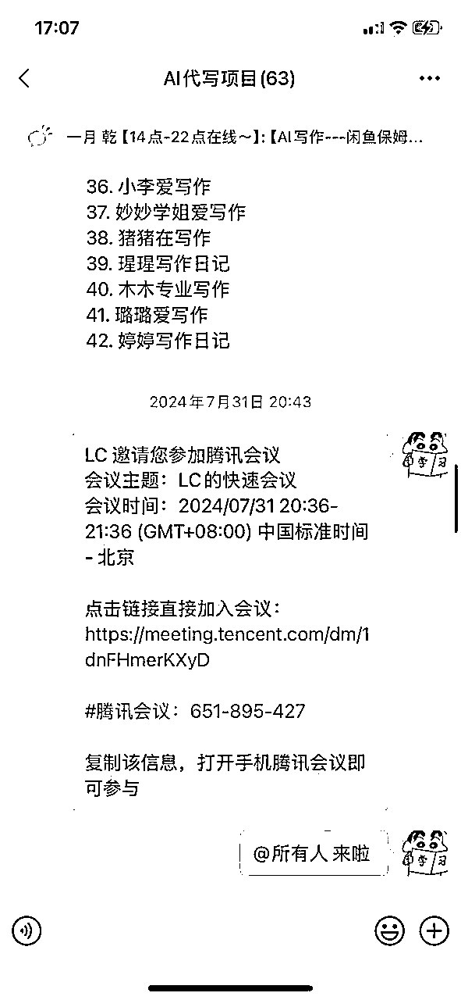
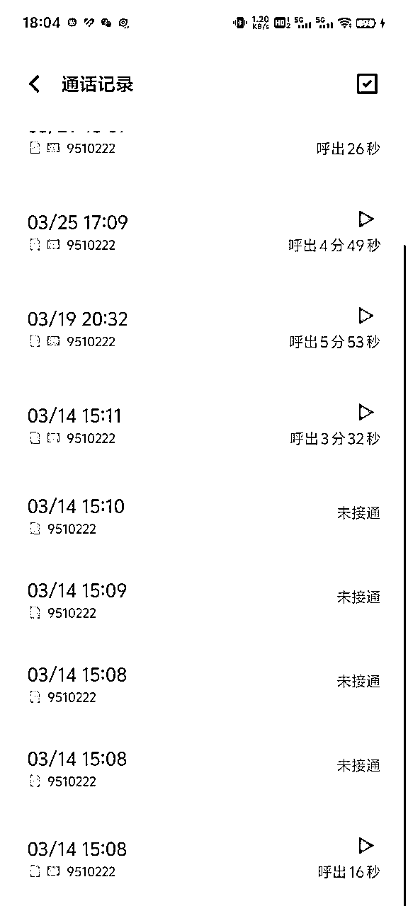
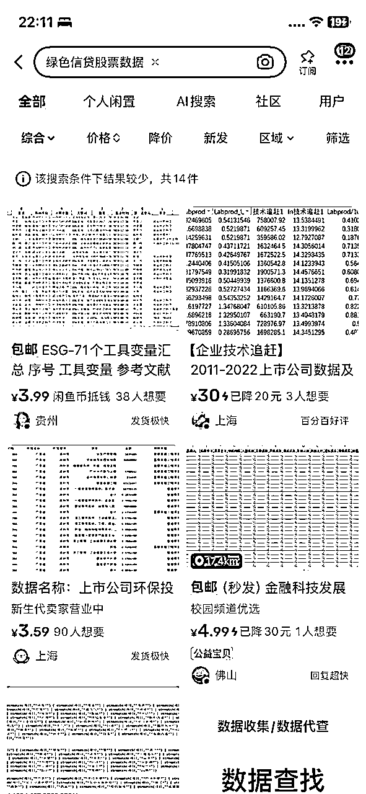
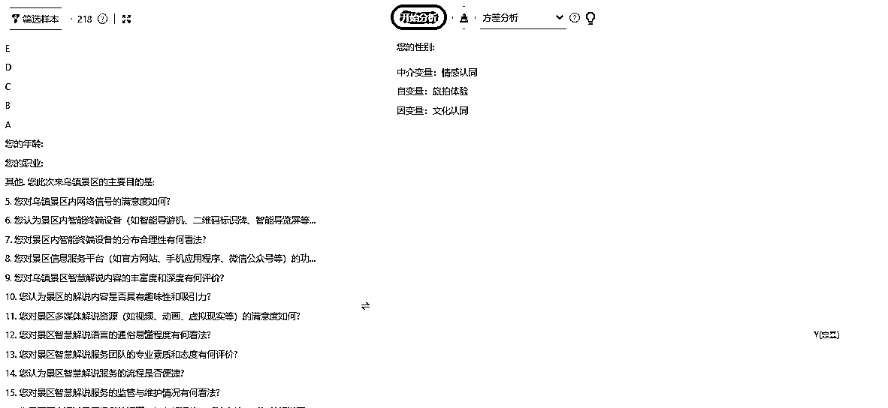
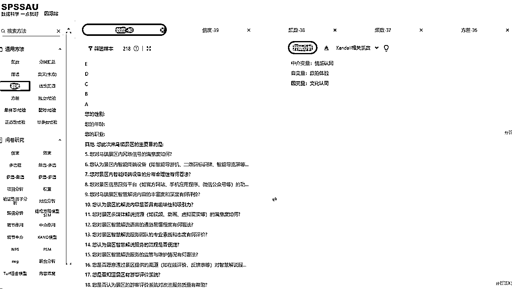

来源：https://ai4utyywcc2.feishu.cn/docx/WkFJdfSl2oiPfYxmoDmcPJVInLh
各位圈友大家好，我是日乾，
生财ChatGPT+自媒体航海 个人成绩榜第二，饭饭AI写作分工作室
扣子AI工坊第一届智能体短视频分析师获奖者，目前深耕于AI写作，于24年10月正式入坑至今。
消失了大半年，都是嘎嘎冲AI写作。目前我们已经交付了306个稿件，这个赛道累计变现652878.68，这次给大家主要分享两方面。
以上是部分账号截图
在此深度感谢生财平台给予我信息上极大帮助，我但凡遇到问题，就来刷刷，总能得到启发和收获。同时超级感谢饭饭哥和苏苏在我一路上，AI写作项目上的每次指点~
自从23年我跟着生财航海，通过ChatGPT工具批量生成视频内容，颠覆我认知后，我一直觉得下一波风口一定是AI会掀起来的，我一定要紧紧跟着AI，虽然由于视野局限，我并不知道AI到底能通过怎么样的产品进行变现，同时很多东西我不懂，但是选项目也要围绕着AI。
因此，在24年7月，我以AI为搜索关键词，开始把生财帖子和中标的帖子都看了一遍，发现一个异常值。有一些关于AI写作取得结果的帖子而且有好几个生财AI写作大佬里面的学员，且我直接加过去后，发现大部分圈友也都一直跟着这个项目做下去，并没有浅尝辄止。
然后，我就开始在生财细挖各种精华帖，最后敲定了AI写作里面最牛的4个大佬，我一一加了后，看了他们的圈，发现他们成长迭代极快，且一直都ALL IN这个项目，最后我得出结果：
项目前景：跟AI相关，符合我预期
操作难度：有足够的最新成功案例，同时一些学员经过培训都能跑大结果，说明适合批量复制
投产比：主要是人力成本，测试0-1精力成本，投产比高
综上所述，花费了整1个月时间调研，得出的结果都很符合自己的预期，当时开心的不行，因此把AI写作作为公司核心项目全力ALL IN。
这个时候，我根据生财一些精华帖分享，了解到后端很重要，要先学会写稿，因此我直接自己就去淘宝接单，快速从0-1写稿，这个时候我还是不会用AI写作的（之前研究的是智能体），因此我又来到生财搜，目标是找到一个能提供AI写作教程的老师，最后敲定了苏苏老师。这里补充一点，苏苏老师写作交付真的相当靠谱，然后我马上就把她的交付手册吸收完，陆续接了淘宝10个单子左右，难度是循序渐进递增的，直到我把AI写作摸透，几万字博士级别的都能写好。
淘宝还是相当黑奴的，不仅钱少还经常拖欠钱，但是确实是很好练手的地方，我一边研究写稿，一边研究团队管理模式，做了10单，其中有一单相当难，我确实没法按时研究出来，然后直接就找客户要齐全部资料，就退单了。接下来我就继续把这个我研究不透的稿子，通过B站和抖音最后终于弄出来了
当我把写作能力磨炼的差不多时候，已经是2个月过去了，这个时候，我已经能把几万字的文章全部写好且达到优质（不求量，只求质，把每一个细节知识点全部过完）
（我自己参与写作的单子）
团队中，核心成员，特别是带头人，真的要把写作当一回事，后端很重要，如果你自己都不会写后端，那么无论是售前优化，售后安抚，写手培训管理等等都很难推进。
【这也可以理解为，创始人一定要懂产品，即便这个产品可能很小】
我团队伙伴这个时候也把流量打出来了，自营盘起来了，后端写作我也能把控了，我就开始处理后端团队搭建问题了。一开始是迷茫的，因为我不知道哪里去找靠谱写手，这时候团队伙伴找到方法了，去到贴吧和豆瓣下沉渠道挖人，还真给我们挖到了5 6个专职写手，除了要价高，没有任何问题。
然后我们就开始铺号，十几个豆瓣贴吧号砸下去，来了几十个人
这里也是为我们埋下巨坑的地方！！
——贴吧
——豆瓣

——聊天记录【踩坑的聊天记录，没有审核实际学历，获取写手信息，以至于他们随便跑单】
BOSS直聘
假传万卷书，真传一句话：后端搭建其实要的就是3个标签
1有水平能写的写手；
2我能正当要求写手提供身份信息，防止随意跑路；
3写手足够多。
BOSS直聘显然都满足，因此ALL IN 这个平台，能找到需要的写手。
后端稳妥后，我就开始着手放大流量板块了。因此，又到了刷生财时间，刷着刷着就想到，找宝妈资源就可以了！！！因此，又找到一直都在视频内容上跟我们有合作的榴莲大哥（生财圈友），找他帮我进行第一波流量放大，然后就有了70多个学员，这也是我的第一期AI写作训练营，真滴感谢我榴莲哥。
因此，我直接就把我们全套的流量打法，腾讯会议直接分享，宝妈们每天只需要4小时左右运营时间即可。
但！因为不是属于旺季，所以其实宝妈们流量并没有打爆，最后都是些小单子在出。GMV可以，但并没有达到预期。而我们其实分润给宝妈们比较低，做得好的一个月才1K-2K左右，做的一般的就只有个几十甚至0。所以除了几个很认真深耕的，后面都潜水了。而几个认真深耕的也因为工作原因，不能每天4小时，慢慢都潜水了。


但我们自营号流量做的越来越好（当然还是比不了旺季）这个时候我们就在深刻反思，是不是自营起号不适合走培训，为此我们专门进行了第二期AI写作项目训练营，这次就找到了圈友Alex，他也帮我们拉了二十来个学员，同样是1:1分享流量玩法，最后结果一样，自营太累了可能，他们赚了些小钱，还是放慢了脚步，流量还是不温不火。
这个时候，我们就开始意识到，自营动作太多了，我们分润低的话，根本不可能刺激她们全力以赴，而分润高，这个是重交付，后面退单，给她们的钱分润，我们也是不会要回来的。

最后我和合伙人商量了下，直接准备拉工作室放大，这个时候我就有2个方向：
1是延续自媒体方向，建立大学创业基地，从新一波创业社团里面筛选人去组建团队。
2直接重新落地一个工作室，直接全职招人来工作。
根据前2期AI写作训练营的结果，以及我对学生的时间规划，我明白想放大还是要招人，规范化前行。
优质学生很看运气，必须一批才能出1个，但出来了真的可以很赞，但现在大学的学业量真的太大且繁琐，因此我好几个做短视频能到几十万播放量的师弟师妹，经常是逃水课帮我们干活
【我以前也是经常逃水课自学剪辑，属于是带坏了他们了哈哈哈哈】
所以，开始筹划自己人生第一次建立工作室。这个时候，我想到的是，必须要有人指导才行，自己摸索，肯定会踩很多坑，这个时候，我的饭饭哥出现了！！
我又开始刷生财加的4位AI写作大佬朋友圈，同时又把生财AI写作又刷了一遍。最后选定了生财圈友饭饭是个闲人，入了他的写作分工作室，建立工作室的经验，这个对我而言是最需要的，因此果断付费上车，开始正式建立工作室之旅。【一开始目的只是避雷，但是真的没想到，后面反而成为了每次遇到大难关时，饭饭哥成为了引路人】
建立工作室之初，还在确定场地，这个时候我就开始大范围的找，初期我把目标放在了众创空间，把全广州的众创空间全部筛选了一次。
当时第一次租场地担心有坑，为此我特意把每一个场地对应背后的公司老板都查了一次，表格里面公司水平是公司实缴资金，没有填数字的都是没有实际缴纳注册资金的。老板本人那个其实是查每个老板名下有几家公司等等。但现在回过头看哈，没意义的，就是纯回顾下自己的傻傻操作。
现在想想其实，挺呆的哈哈哈哈，费了2天时间，各种查阅和电话沟通。但实际上租场地，核心就几点：
最后就是个小tips，租赁合同我们大部分是看不明白的，这个时候闲鱼找个律师，让她帮你看。
（我还在大学做小项目时，就已经在闲鱼上找了一个线上有水平的律师长期绑定，但凡遇到问题就给钱请教，这样往往能得到衷心建议，而不是仅仅条款建议）
之前说的没有深度筛选的雷就开始爆了。因为没有获取写手的学历，身份信息等，只通过稿件质量OK就大量给单。
其中一个硕士新闻学的同学，豆瓣来的，每单拿了二期款项，直接跑了，她那有40多个单子，当然跑了也就跑了，关键是，她给的所有稿件，全部洗稿，但我并没有看出来，反而认为其很专业，非常信任，当然也是因为人手不够，只能给她，初期已经是尽量给其他写手，分摊风险了，但当时陆续爆单，又再忙工作室搭建，全都是问题，全都要处理，她人也很好，真的没想到会跑。
真心话，这个教训记一辈子，绝不可把大量希望放到一个人身上，她哪天跑了就是你暴雷的时候。
问题也随之而来，洗稿初期是看不出来的，可是后期全都是问题，我们当时针对这个问题，一单一单道歉，一单一单退款，说明原因，大部分还是愿意相信我们，我们就继续安排人负责。
可还是有几个客户直接崩了，因为她等着交稿给老师，写手拖了她1个多月，只给客户完成了模型的文献综述，但是初稿一直都没有出来。销售那也是没办法只能陪着拖（后面我们针对这个问题做了预警，转单1次，不行立马退款，给客户时间找下家，以防售后麻烦）

即便全款退了，有几个客户依旧很气，然后就跑到闲鱼举报我们账号，因为我们问题发生前就退款，闲鱼判我们胜，但问题就是我们是引流的，所以闲鱼判我们胜一天后，账号直接因为站外引流永久封禁。（这里真人麻了）

解封tips：跟客服和和气气说没用，就得骂【围绕我们没有欺骗客户钱骂，不要从引流角度骂】
这个过程中，幸亏有饭饭哥，跟他深度请教了很多问题，因此他给了我对应的技巧，解决方法，同时安排了线上写手给我们，应付的熬过了这个难关。
还有很多很多，除了0-1是自己摸索，后期工作室搭建所有问题，流量放大问题，闲鱼平台问题全靠饭饭哥，坦白说，一开始是真没想到会遇到这么多问题，付费就是为了建立工作室避雷，没想到后面全靠大佬指点带飞。
适当付费真的很有效，只要确定好自己付费预期
如：我是为了解决某个问题付费，而不是为了焦虑随意买项目，生财里面很多优质大佬的付费真的可以嘎嘎入，我几乎所有遇到卡点都在生财找到人付费解决了，纯粹有感而发哈，不要误会为付费能解决一切问题就行。
场地确定好，自然就是开始快速搭建团队了。框框招人，因为我自己是蛋蛋后，所以我还是相当了解同龄人想法，主打就是一个真诚，但凡来到线下的面试的，大都愿意加入，然后我就筛选了一下就留了2个专职写手，1个前端同事。
这里分享个Idea，初始薪资尽量低些，然后通过大量的红包+奖励+绩效，让他一边成长一边涨工资，目的是给足够的空间涨工资同时让他把能力提升上来，最后得到一个能力不错的人，当然还是要多筛选，人对了，再加以方法引导才是最有效的。
只涨绩效，不涨底薪
同时建立了问题反馈机制，提出一个有效问题发红包，提出问题并解决发大红包，自愿加班发红包
核心：1-10放大，核心在人
我主要做的就是大量招人，天天招。然后围绕OKR，拆解为对应岗位可量化执行步骤。SOP已经给了，所有伙伴也已经完成了对应岗位的0-1。后续需要细节迭代，具体细节怎么做，让他们自己去讨论，思考，他们需要什么资源，我就尽量给，具体的管理工作则由我的合伙人来管理，我要做的就是看数据，看问题反馈机制，天天招聘合适的人，从而进行奖励机制和优化人才机制。
接下来就一路成长，遇到问题解决问题，期间我们闲鱼大号被封禁了5个，也跟饭饭哥学习，全给解封了。然后就一路迭代到现在总GMV达到了65W【不包含退单GMV】，我个人觉得还是很OK的了，毕竟这个项目的毛利润很高。特别我们都是用的个人写手，而且也把在社会上组建团队经验磨出来了，今年第一波冲刺有这个成绩，我个人觉得是达到70分了。
【大学里面组建的内容工作室，跟社会上确实还是不一样的，是一种更新奇和更加有趣的体验】
接下来，再给大家分享一下实证分析板块，我看到咱生财航海也有AI写作，从流量到写作简直不要太全，也看到很多圈友给出了一些AI写作分享，那我就想着，打打差异化吧，给一个更深度且细分的写作经验分享——实证分析。这个方法跟传统做实证不一样，完全小白跟着走也可以做出一个专业化实证分析，且不需要大量理论理解。
实证分析（Empirical Analysis）是指通过收集和分析实际数据，运用科学方法进行研究，以得出结论或验证理论假设的一种研究方法。它强调以经验数据为基础，利用统计、计量经济学、社会学等方法对现实世界中的现象进行分析和解释。
实证分析通常包括以下几个步骤：
实证分析常用于经济学、社会学、医学、心理学等多个领域，它不同于理论分析，更多的是依赖于现实世界中的数据，旨在通过实证检验理论的适用性或探索规律。
实证分析，AI写作方面，单独做这一个品类，也是可以再闲鱼赚钱的，一单客单价就在1K-2K之间。
数据方面，一般根据研究内容，可以分为问卷数据和机构渠道数据。
以下就是一个我们旅游管理专业方面的调查问卷量表案例
AI软件：ChatGPT
这种情况，一般就是首先要先用AI生成一份调查问卷，这个时候，我们需要根据研究题目和内容，确定好变量。
案例题目：旅拍对游客目的地文化认同的影响研究
因变量：文化认同——3个选项
自变量：旅拍体验——7个选项
中介变量：情感认同——3个选项
以上就是这个方向的3个变量，一般来说，有的只需要因变量和自变量，有的则3种变量都需要。
关于变量的选择，我们只需要直接丢给AI进行生成变量即可。
当调查问卷确定好后，就去到问卷星，全自动生成问卷即可。https://www.wjx.cn/
最后记得微调检查
渠道：淘宝，PDD
价格：0.3-1块/1份真实问卷【我自己长期买的是淘宝的，0.4/份，包信效度0.7】
买了后，你要准备预留1天时间，填问卷他们需要3-6小时，因为有时候信效度不一定能达到0.7，需要再弄一份问卷或者再让他们填一次数据。
当调查问卷结果出来后，是不会变成对应量表的，这个时候，你需要把选项换成1-5即可【性别 身份标签等不用，这个是用于后续做方差分析的】
这类型的数据，可以理解为，就是从专业有权威的网站，机构等获取的统计数据。
如金融专业，可以登录Wind金融数据平台https://www.wind.com.cn/，直接获取各种与研究方向相关各种证券数据
同时，也可以直接闲鱼购买数据，直接把题目复制到闲鱼，直接搜，一般都有出，不用自己辛苦找。

数据到手后，就是做数据清洗（哪个有用留哪个，不懂问下AI）
这时候，需要用到我们的专业网站：https://spssau.com/
登录以后，我们可以看到这个界面，首先，我们要把变量处理好
选择生成对应变量，也就是把对应选项填到对应变量
生成对应变量后，即可开始操作
概念：描述性统计分析 是用于总结和描述数据特征的统计方法，帮助我们快速理解数据的基本情况。其主要内容包括：
描述性统计帮助我们快速概览数据，为进一步的分析提供基础，广泛应用于市场研究、社会科学、医学和教育等领域。
找到频数，把人群标签的选项拖过去（系数用标准的，如果导师有要求可变化）
得出结果后直接复制
概念：信度分析 是评估测量工具可靠性和一致性的统计方法，确保工具在不同时间、情境或评分者之间能够得到一致且稳定的结果。主要类型包括：
高信度表明测量工具可靠，有助于减少误差，提高研究结果的稳定性和准确性。
找到信度，把对应变量丢进去即可（系数用标准的，如果导师有要求可变化）
得出结果后直接复制
概念：效度分析 是评估测量工具是否能够准确测量其所要测量的概念或特征的过程。它确保测量工具的结果反映了研究目标。主要类型包括：
高效度意味着测量工具能够准确反映所要测量的特征或概念。
找到效度，把对应变量丢进去即可（系数用标准的，如果导师有要求可变化）

得出结果后直接复制
差异性分析 是用来比较不同组或不同条件下数据的差异的统计方法。它帮助判断各组之间是否存在显著的差异。常见的方法包括：
差异性分析能够帮助研究者理解不同群体或条件下的变化，常用于群体比较和实验数据分析。
直接点理解：分析不同性别，不同身份，不同类别等对应变量的数据变化。

选择方差分析，根据需要进行不同的分析
概念：相关性分析 是用于评估两个或多个变量之间关系强度和方向的统计方法。它帮助研究者了解变量之间是否存在某种程度的关联。常见的方法包括：
相关性分析用于识别变量之间的关联性，但不表示因果关系。

直接找到相关，然后丢变量即可（系数用标准的，如果导师有要求可变化）
概念：中介效应分析 用于检验中介变量在自变量和因变量之间的作用，揭示自变量如何通过中介变量影响因变量。分析路径包括：
常用方法包括Baron-Kenny法和Bootstrap法。中介效应可以是完全中介（自变量仅通过中介变量影响因变量）或部分中介（自变量直接和通过中介变量影响因变量）。
对应变量丢到对应位置（系数用标准的，如果导师有要求可变化）
概念：回归结果分析 用于解释自变量与因变量之间的关系。关键要素包括：
回归分析帮助理解变量关系，并评估模型的有效性。
根据论文核心因变量选择需要变量放进去即可（系数用标准的，如果导师有要求可变化）
有的客户需要把每一个选项进行对应分析，而不是针对变量合集进行分析，这个时候可以用以下方法
当上述实证分析皆得出结果，这个时候，其实未必就是100%可以作为论文论据，因为不一定是显著，无法证明自己的预期假设。
因此如果自己看不懂，可以丢给AI
随机拿了稳健性检验区丢给AI检查，其他多个分析也是如此。如果需要进一步检查，可以把假设也丢给AI，让其分析综合合理性。
【这里面只是举例，核心意思是我们要学会用AI帮我们排查问题】

知网直接下载对应需要的文献（硕论以上论文，因为硕论才会有实证分析）
【以下用经济学论文实证分析作为案例】
找到案例论文关于对应分析的文字描述部分，投喂给AI
接下来复制对应的描述性统计分析数据，AI就会用我们想要的表达格式进行阐述
其他所有分析都是如此：描述格式+实证分析结果
AI只是增加效率
AI写作的前提是，你自己得会这个品，无论是研究内容，演讲稿，小说等等，都是你脑海里已经有一个大致的雏形，这个时候，你让AI先帮你生成框架，然后基于对的框架开始一章一章生成，期间每章AI有问题，再给出对应提示词快速润色，最后一篇稿子生成完毕，再用自动格式软件，全自动调整格式，一篇稿子便快速完成了。
【曾经我打演讲比赛，稿子每次都要1天时间，这还是基于我长期学校带队打演讲比赛情况下的速度，而用了AI，我现在制作一份获奖演讲稿+PPT只需要30min】
AI可以教你一切
AI数据整合
很多时候，我们普通人，挖到一个好项目，其实自己也没有办法判断其正确与否，因为你没法掌握论据。这时候，我就经常性的，针对自己项目的品，去分析人群数据，通过AI给我进行汇总全球所有公开数据，然后整合，我自己进行计算投产比，效果嘎嘎猛。【注意辨别真假就好】
AI坏处
但，我相信这都是阶段性的，这都是能解决的，AI是真的真正的强大真的不仅仅在于降本增效，而是我们普通人也有了数据库的运用，我们可以用数据库去佐证自己的观点，去挖掘更多不知道的信息差，我想这个才是AI发展对我们普通人真正的红利！
最后，能切到，切好这个AI项目，千言万语依旧是感谢吧，感谢生财的平台让我遇到了一群大佬可以在我每次关键卡点上，都能链接到人帮我解决问题，感谢AI写作上苏苏姐，在我AI写作上的指点，真的是带我把写作的所有点全部干掉。感恩饭饭哥帮我在1-10的过程中，从流量 转化 交付干掉了一切拦路虎，指点迷津！！！
祝大家，生财有术~